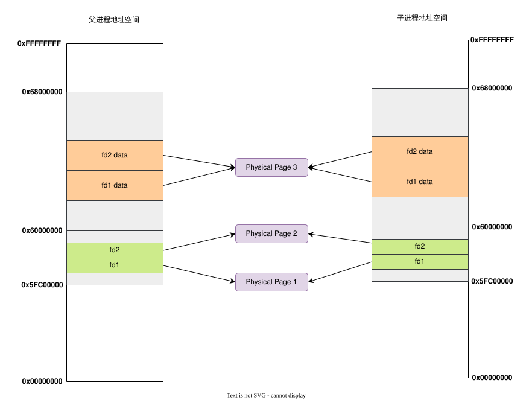
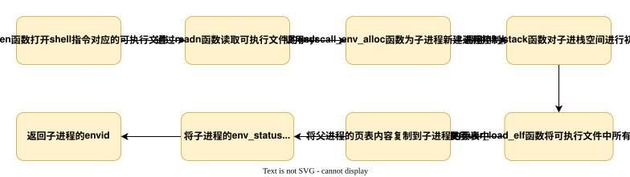

实验思考题
Thinking 6.1
Q： 示例代码中，父进程操作管道的写端，子进程操作管道的读端。如果现在想让父进程作为“读者”，代码应当如何修改？
A： 只需要调换父子进程操作的内容即可——
1 | int main() { |
Thinking 6.2
Q： 上面这种不同步修改 pp_ref 而导致的进程竞争问题在 user/fd.c 中的 dup 函数中也存在。请结合代码模仿上述情景，分析一下我们的 dup 函数中为什么会出现预想之外的情况？
A： dup函数的作用时将oldfdnum所代表的文件描述符的指向的数据完全复制给newfdnum文件描述符，一共包含两个过程——
- 将
newfd所在的虚拟页映射到oldfd所在的物理页 - 将
newfd的数据所在的虚拟页映射到oldfd的数据所在的物理页
考虑如下代码段
1 | // 子进程 |
分析过程如下：
- fork结束后，子进程先进行。但是在
read之前发生了时钟中断，此时父进程开始进行进行。 - 父进程在
dup(p[0])中，已经完成了对p[0]的映射，这个时候发生了中断，还没有来得及完成对pipe的映射。 - 此时回到子进程，进入
read函数，结果发现ref(p[0]) == ref(pipe) == 2, 认为此时写进程关闭。
Thinking 6.3
Q： 阅读上述材料并思考：为什么系统调用一定是原子操作呢？如果你觉得不是所有的系统调用都是原子操作，请给出反例。希望能结合相关代码进行分析。
A： 在 syscall 对应的异常处理程序 handle_sys 中，我们使用了汇编宏 CLI 来禁用全局中断，因此系统调用时不会被中断，是原子操作。
1 | NESTED(handle_sys,TF_SIZE, sp) |
Thinking 6.4
Q： 仔细阅读上面这段话，并思考下列问题
- 按照上述说法控制 pipeclose 中 fd 和 pipe unmap 的顺序，是否可以解决上述场景的进程竞争问题？给出你的分析过程。
- 我们只分析了 close 时的情形，在 fd.c 中有一个 dup 函数，用于复制文件内容。试想，如果要复制的是一个管道，那么是否会出现与 close 类似的问题？请模仿上述材料写写你的理解。
A： 分析如下
- 可以解决。由于
ref(p[0])始终小于ref(pipe), 因此如果先解除p[0]的映射，则ref(p[0])更要小于ref(pipe)，永远不会出现ref(p[0]) == ref(pipe)。 dup函数也会出现与close类似的问题，pipe的引用次数总比fd要高。当管道的dup进行到一半时， 若先映射fd，再映射pipe，就会使得fd的引用次数的+1先于pipe。这就导致在两个map的间隙，会出现pageref(pipe) == pageref(fd)的情况。这个问题也可以通过调换两个map的顺序来解决。
Thinking 6.5
Q： bss 在 ELF 中并不占空间，但 ELF 加载进内存后， bss 段的数据占据了空间，并且初始值都是 0。请回答你设计的函数是如何实现上面这点的？
A： 对于bss段中和text&data段共同占据一个页面的部分，就使用user_bzero将这一部分置零；对于bss段其它部分，仅使用syscall_mem_malloc分配页面而不映射到任何内容。
Thinking 6.6
Q： *为什么我们的 .b 的 text 段偏移值都是一样的，为固定值？
A： 因为在user.lds文件中将所有.b文件的text段偏移量都设置为0x00400000。
1 | . = 0x00400000; |
Thinking 6.7
Q： 在 shell 中执行的命令分为内置命令和外部命令。在执行内置命令时 shell 不需要 fork 一个子 shell，如 Linux 系统中的 cd 指令。在执行外部命令时 shell需要 fork 一个子 shell，然后子 shell 去执行这条命令。据此判断，在 MOS 中我们用到的 shell 命令是内置命令还是外部命令？请思考为什么 Linux 的 cd 指令是内部指令而不是外部指令？
A： 分析如下
- shell命令是外部命令，因为在执行shell命令时，当前进程通过
fork产生一个子进程，也就是子shell，然后这个子shell来运行该命令所对应的可执行文件。 - linux中的内部命令实际上是shell程序的一部分，其中包含的是一些比较简单的linux系统命令，这些命令由shell程序识别并在shell程序内部完成运行，通常在linux系统加载运行时shell就被加载并驻留在系统内存中。因为
cd指令非常简单，将其作为内部命令写在bashy源码里面的，可以避免每次执行都需要fork并加载程序，提高执行效率。
Thinking 6.8
Q： 在哪步， 0 和 1 被 “安排” 为标准输入和标准输出？请分析代码执行流程，给出答案。
A： 在init.c的umain函数中将0和1分别被设置为了标准输入和标准输出。相关代码如下
1 | //将0关闭，随后使用opencons函数打开的文件描述符编号就被设置为零为0 |
Thinking 6.9
Q： 在你的 shell 中输入指令 ls.b | cat.b > motd。
- 请问你可以在你的 shell 中观察到几次 spawn？分别对应哪个进程？
- 请问你可以在你的 shell 中观察到几次进程销毁？分别对应哪个进程？
A： 通过增加调试信息可以看出
- shell中进行了2次
spawn，这两次生成的子进程分别用于执行ls.b和cat.b - shell中进行了2次进程销毁，这2个进程分别是shell执行
ls.b和cat.b时通过spawn生成的子进程。
实验难点图示
我认为该实验的难点主要包含两个难点——和管道相关的内存分配、spawn函数的处理流程
和管道相关的内存分配
子进程和父进程的内存空间中都分为写端fd和读端fd分配了一个虚拟页，但是子进程和父进程的读端所在的虚拟页映射到了同一个物理页，同样他们的写端所在的虚拟也也都映射到了同一个物理页。
此外，父子进程中这四个fd所对应的文件数据都位于同一个物理页。所以，一个管道实际上只需要占用3个物理页。图示如下——

spawn函数的处理流程
spawn函数的处理流程如下图所示

体会与感想
Lab6要求我们完成pipe机制和实现一个简单的shell，实验任务比较简单，但是与之相关的很多函数理解起来还是有点困难。不过，OS实验课总算是告一段落了，通过自己动手实现一个简单的操作系统，不仅让我们收获了很多成就感，同时也让我们对理论课知识有了更深刻的理解。
If you like this blog or find it useful for you, you are welcome to comment on it. You are also welcome to share this blog, so that more people can participate in it. If the images used in the blog infringe your copyright, please contact the author to delete them. Thank you !